ЛАБОРАТОРНО-ПРАКТИЧНА РОБОТА
Тема: «Поверхнево-нашивні нерахункові техніки вишивки»
Мета: тканина, нитки, голки, ножиці, наперсток, п’яльця.
Матеріали та інструменти: засвоєння техніки вишивки бісером, лелітками, виховувати естетичний смак повагу та любов до традицій українського народу.
Порядок виконання роботи:
- Ознайомитись з теоретичними відомостями практичної роботи.
- Підібрати тканину, голки та нитки для роботи.
- Виконати згідно з технологічними вимогами зразки поверхнево-нашивних технік нерахункової групи 10х10 см кожний
Теоретичні відомості:
Гладь – це вишивання площини узору частково або повністю прямими та похилими стібками. Гладь буває одно- й двобічна, пласка (без настилу) і висока, або опукла (по настилу), прорізна, точна, або лічильна, та вільна, або рисована, однобарвна та багатобарвна. Виконують її вручну і на п’яльцях, нитками різних гатунків залежно від якості тканини, візерунка, призначення виробу й техніки виконання.
Гладь вільну двобічну без настилу (рис. 66) широко використовують у рослинних орнаментах і вишивають кольоровими нитками. Стібки треба класти так: дрібні листочки вишивають косою гладдю, плоди – прямою (рис. 66, а).
На великих деталях узору стібки гладі розміщують за його формою: на пелюстках квіточок – від країв до центра візерунка (рис. 66, б), у листях – від краю до середини, у напрямку жилок. Інколи листя зашивають не повністю (рис. 66, б, в).
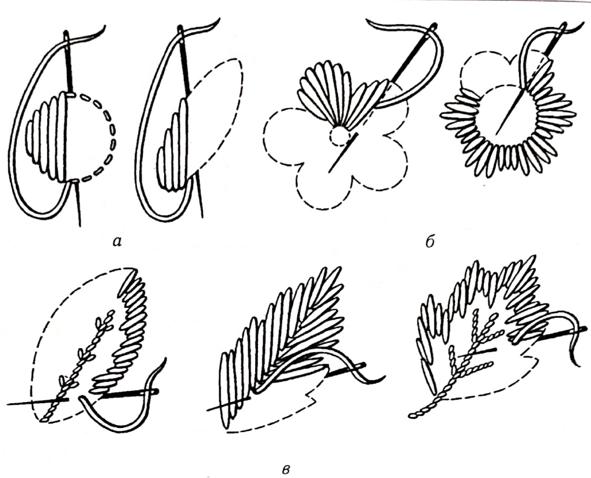
Рис. 66.Гладь вільна двобічна
Гладь уприкріп (рис. 67) застосовують для заповнення великих площин узорів. Ця гладь здавна була відома на Близькому і Далекому Сході, в Середній Азії та на Кавказі. Вишивають її окремими стібками верхошва (однобічна гладь із лицьового боку шита), які при зворотному ході закріплюють маленькими косими стібками. Розмішують стібки за формою узору або у напрямку нитки в тканині (рис. 67, а –г).
В Україні така гладь відома як полтавська.
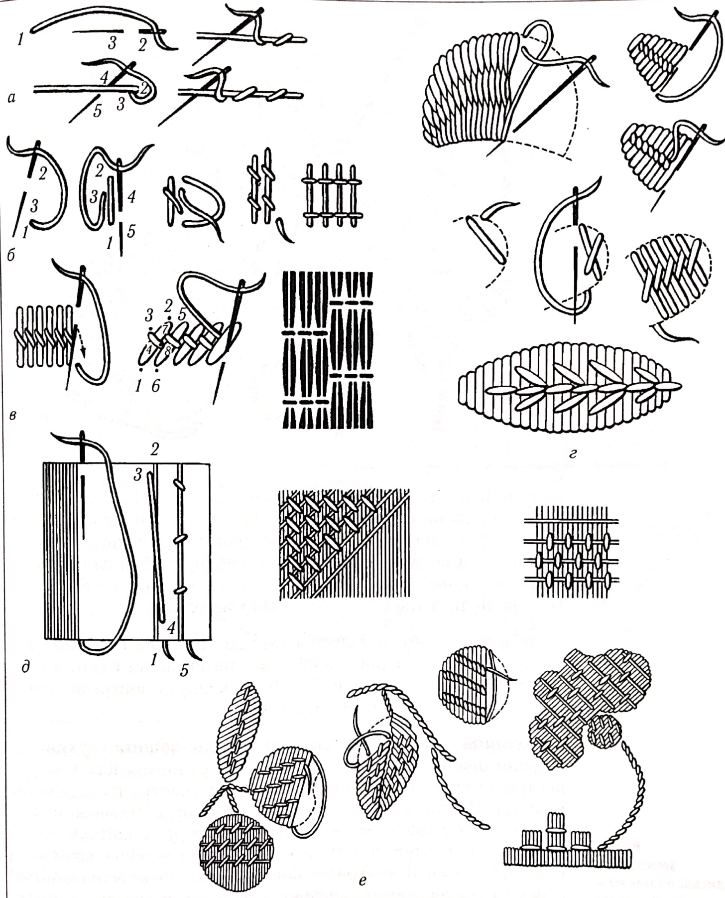
Рис. 67.Гладь уприкріп та її різновиди
За іншого способу вишивання гладдю уприкріп спочатку заповнюють усю площину узору довгими стібками гладі, а потім поверх них на відстані 5–10 мм кладуть поперечні або косі стібки-пересяги (рис. 67, д, е).
Верхошов (рис. 68) – однобічна гладь, вишита глухим вільним швом. Шиють її великими стібками, які йдуть від центра до краю або від краю контуру до центра на невеликій відстані. Відстань між стібками по краю буде більшою ніж по центру. Стібки кладуть за формою узору: у квітках – від краю до центра, а в листях, стеблах та гіллі – похило (рис. 68, а – г). З лицьового боку тканини буде основний рисунок, а із зворотного – стібки створюють штрихову лінію на контурі узору (рис. 68, б, д). Великі заокруглені деталі вишивають гладдю вісімка, техніку виконання якої показано на рис. 68, е.
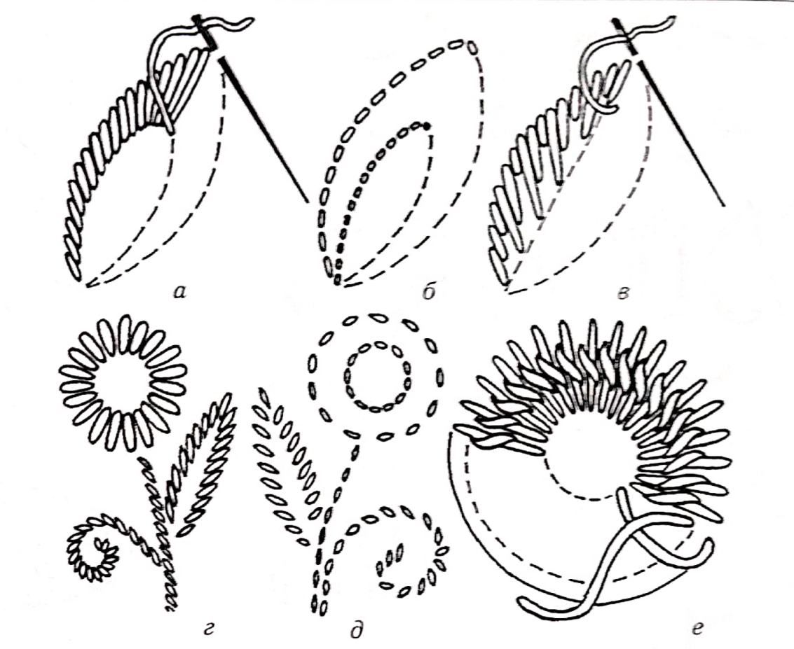
Рис. 68.Верхошов та його різновиди
Верхошов – економний спосіб вишивання. Він був відомий у багатьох країнах. Поступово ця техніка збагатилася яскравими розшивками та рослинними узорами (рис. 68, є). Верхошов, зазвичай, виконують товстими нитками: ірис, муліне в пасмо (шість ниток), вовняними, синтетичними, основний колір яких червоний із доповненням синього, зеленого, жовтого, бежевого.
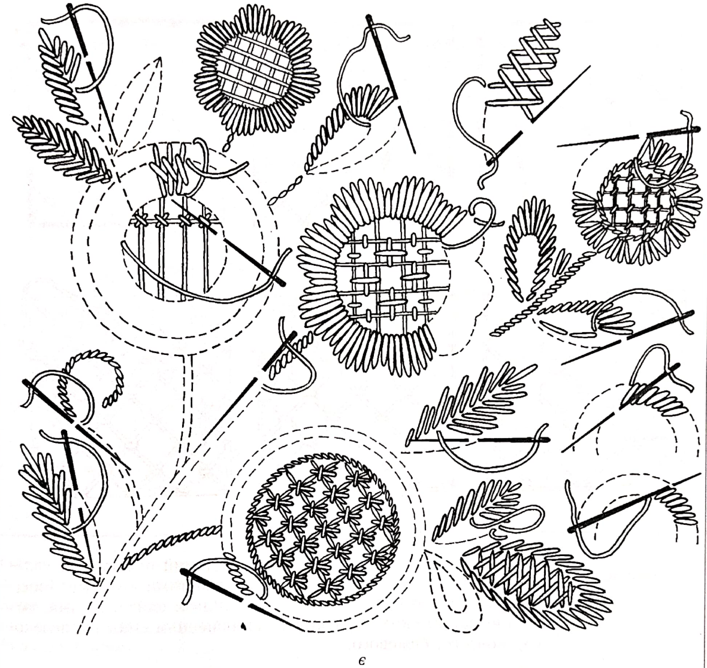
Рис. 68.Верхошов та його різновиди
Сітки декоративні накладні (рис. 69) доповнюють і прикрашають візерунки верхошва. Накладні сітки виконують нитками, натягнутими від контуру одного боку до контуру протилежного в горизонтальному, вертикальному та діагональному напрямках. Місця перетину ниток прикріплюють до тканини невеличкими стібками різних узорів (рис. 69, а, б). Контур сітки обшивають стебловим швом (рис. 69, а, в, г) або закривають стібками квітки. Декоративними накладними сітками можна вишити серединки квітів, окремі деталі узору або весь узор. Серединки вічок верхошва заповнюють також швами гладі (рис. 69, д). двобічну високу гладь виконують за попередньо прокладеним настилом із ниток, трохи товщих, ніж робочі, щоб гладь була опуклою.
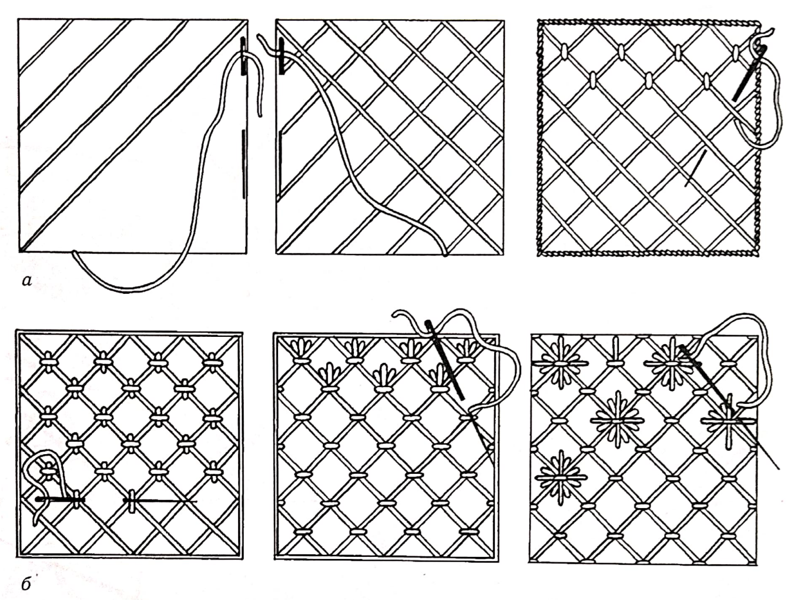
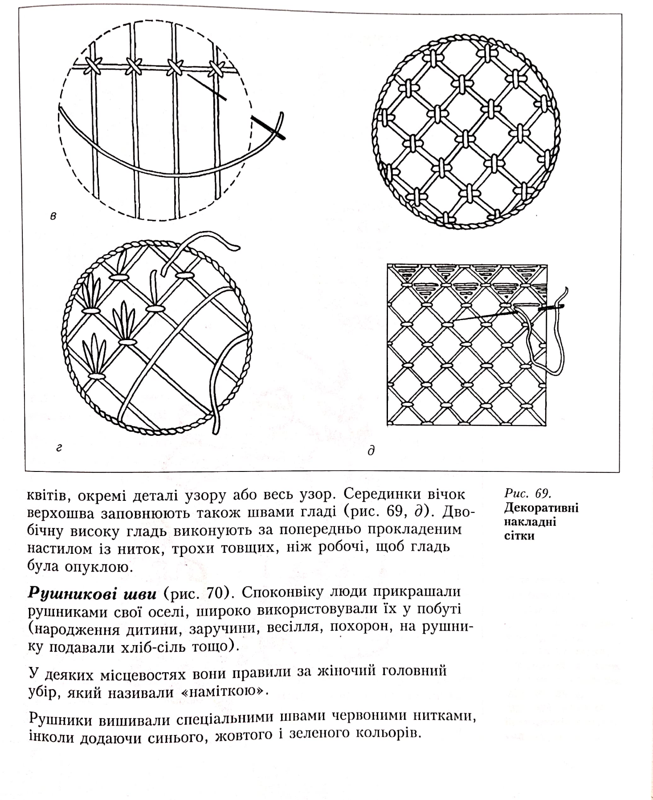
Рис. 69.Декоративні накладні сітки
Рушникові шви (рис. 70). Споконвіку люди прикрашали рушниками свої оселі, широко використовували їх у побуті (народження дитини, заручини, весілля, похорон, на рушнику подавали хліб-сіль тощо).
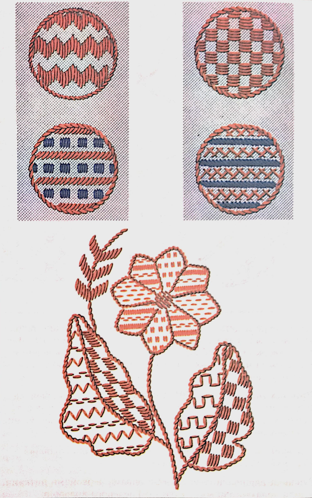
Рис. 70.Рушникові шви
У деяких місцевостях рушник уживали як жіночий головний убір, який називали «наміткою».
Рушники вишивали спеціальними швами червоними нитками, інколи додаючи синього, жовтого і зеленого кольорів.
Рушниковий шов викопують так. Спочатку на полотні позначають олівцем контур візерунка і вишивають його стебловим або тамбурним швом, прутиком двобічної штапівки. Потім площину узору заповнюють різними комбінаціями стібків – заповненнями – переважно лічильних: уперед голку, гладдю, штапівкою, кривулькою, хрестиком, козликом, сітками тощо. У народних вишивках існує понад 20 видів заповнень.
Усі вони дуже характерні для української вишивки. Наприкінці позаминулого та на початку минулого століття у вишиванні рушників широко застосовували старокиївський шов, який нагадує довгі (завдовжки 1,0–1,5 см) стібки стеблового шва, та вільну одно- або двобічну гладь, яку виконували нитками переважно червоного кольору.
Рушниковими швами вишивають не тільки рушники, а й декоративні панно, скатерті, хустки та інші побутові речі.
Біла гладь (рис. 71) – один із різновидів вільної гладі. Колись такою гладдю (без настилу) вишивали білими нитками по білому лляному полотну постільну та столову білизну.
Звідси й її назва – білизняна гладь. З часом білою гладдю, прокладаючи настил, почали прикрашати комірці, носовички, жіночі блузки, дитячі плаття і називали її білою гладдю, високою, або бродері.
Послідовність виконання білої гладі така: на тканину переводять узор, обшивають його контури стібками вперед голку, кладуть настил в один або два ряди (для більшої опуклості) і роблять гладь у напрямку, протилежному настилу.
Для роботи потрібні м’які й блискучі нитки – муліне або шовк.
Біла гладь складається з кількох швів: уперед голку, строчка та насип, стебловий, а також шнурочок, горошок, або пишечка, вузлики, лапочка, листочок, квіточки, підкладна гладь.
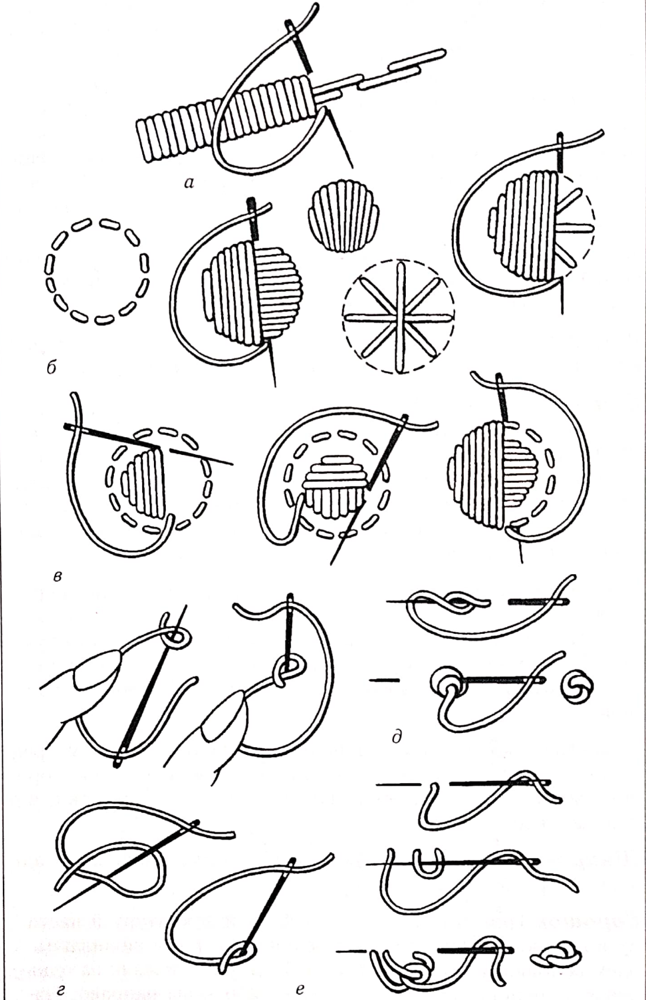
Рис. 71.Біла гладь: а - шнурочок; б, в - горошок; г-е - вузлики
Шнурочок (рис. 71, а) виконують стібками двобічної гладі зліва направо по настилу.
Горошок (рис. 71, б) після прокладання контуру й пастилу починають вишивати від середини: спочатку вишивають одну половинку горошинки, а потім другу, стежачи за однаковою кількістю ниток з обох боків, або зліва направо. Настил може бути подвійним, щоб надати більшої опуклості шву (рис. 71, в).
Вузлики (рис. 71, г–в) вишивають на однаковій відстані один від одного рядами, паралельними контуру узору. Цим швом заповнюють контури квітів і листочків.
Лапочки та листочок (рис. 72, а) настилають поперечними стібками гладі вздовж узору.
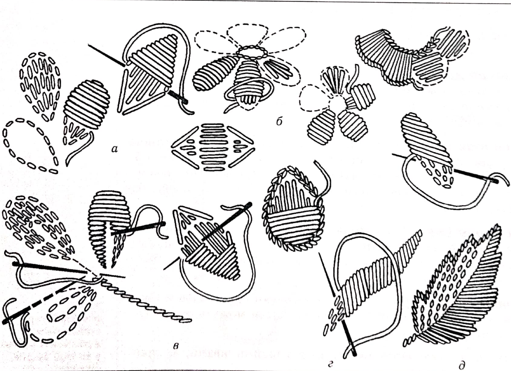
Рис. 72. Вишивання елементів білої гладі: а - лапочки та листочок; б - квіточка;
в - листочок у розкол; г - коса гладь; д - різаний листочок
Квіточка (рис. 72, б) – спочатку вишивають гладдю серединку квіточки або проколюють дірочку й обшивають її шнурочком чи петельним швом. Потім стібками вперед голку позначають контур квітки, роблять настил і вишивають гладдю пелюстки.
Листочок у розкол (рис. 72, в) розділений посередині на дві половини (по ширині) та на дві або три частини по довжині. Спочатку вишивають гладдю довгими стібками початок та кінець листочка, а потім середину.
Коса гладь (рис. 72, г) призначена для вишивання листочків та узорів із хвилястими лініями контурів.
Різаний листочок (рис. 72, д) виконують косою гладдю та вузликами або бісерним швом-насипом. Контур половинки, вишитої вузликами, обшивають шнурочком, строчкою або стебловим швом.
Шов підкладний (рис. 72, є) виконують так. Із зворотного боку шиють козлик, а з лицьового боку контур виходить об шитим густими стібками, які нагадують строчку. Цим швом прикрашають вироби з дуже прозорих тканин: маркізету, батисту, шифону.
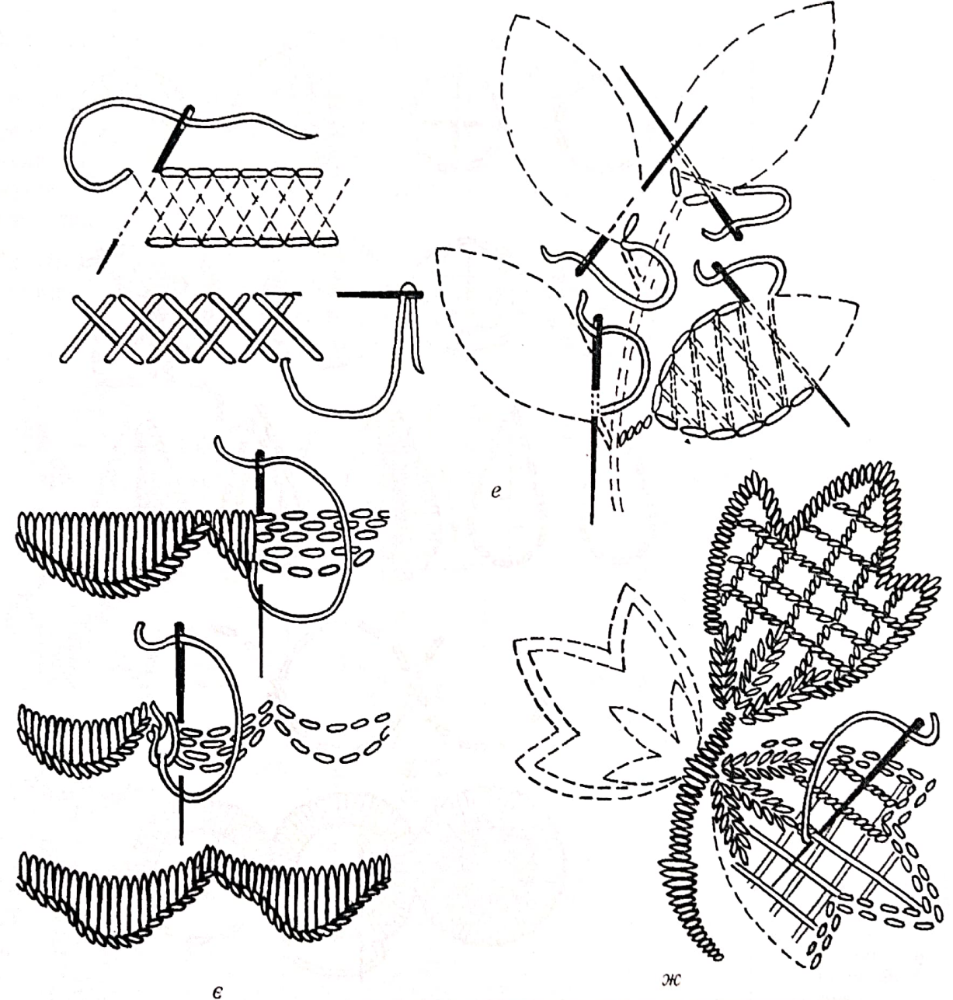
Рис. 72. Вишивання елементів білої гладі:
е – підкладний шов; є - фестони; ж - ажурна сітка
Фестони (рис. 72, є) вишивають по настилу петельним швом, настилаючи стібки перпендикулярно до краю виробу.
Залежно від призначення виробу їх роблять круглими, гострими, зубчастими.
Сітки ажурні (рис. 72, ж) застосовують для оздоблення серединок квіток, пелюсток і листя. Сітки можуть бути глухими й прорізними.
Біла гладь дуже часто поєднується з такими швами, як прорізна гладь та мережки.
Гладь прорізна (рис. 73) – наскрізна вишивка, для якої характерні проколені або прорізані у тканині дірочки, різні за розміром і формою: дірочки, калачик, листочок, зчіпки, які обшивають шнурочком. Для вишивання потрібна тонка й прозора тканина, краще лляна, та нитки муліне.

Рис. 73.Гладь прорізна: а - дірочки; б - калачик; в - листочок, або човник; г - зчепка
Як і в білій гладі, по нанесеному на тканину узору обшивають контури окремих деталей стібками вперед голку. Потім тканину розрізають посередині, роблять додаткові надрізи й обшивають зліва направо шнурочком. Нитку закріплюють із вивороту кількома дрібними стібками.
Дірочки (рис. 73, а) вишивають кожну окремо, щоб зі споду не залишилося переходів ниток. Дрібні дірочки проколюють кілочком або в’язальною спицею і кожну з них обшивають шнурочком без попередньої намітки. Можна спочатку зробити настил по контуру дірочки в один-два ряди стібками шва вперед голку, потім зробити прокол і обшити його через край вузеньким шнурочком завширшки 1–2 мм.
При вишиванні дірочок діаметром до 10 мм у центрі її гострими кінцями ножиць розрізують тканину навхрест. Голкою підгинають тканину на лівий бік (по намітці) і обшивають через край шнурочком. Після закінчення роботи кінці підігнутої зі споду тканини обрізують гострими ножицями.
Калачик (рис. 73, б) – контури обшивають стібками у два- три ряди. Контур широкої сторони вишивають гладдю, а вузьку частину – шнурочком.
Листочок, або човник (рис. 73, в), обшивають шнурочком по контуру, під який забирають розрізану тканину.
Як і білу гладь, прорізну виконують переважно на тонких тканинах.
Швидка гладь.На основі простих ручних швів рукодільниці створювали нові швидкі, легші в роботі, нескладні у виконанні й декоративні в оздобленні виробів. Сучасні оздоблювальні шви відрізняються від стародавніх своєю простотою. Їх виконують, як правило, великими стібками і товстими нитками, не дотримуючись точності у рахунку ниток тканини, і по вільному контуру узору.
Гладь штрихова (рис. 74) – одна із швидких і легких вишивок, складається з окремих стібків, які нагадують промені або штрихи, що йдуть у різні напрямки від центра. Техніка виконання дуже проста: узор переводять крапками на тканину і заповнюють прямими та похилими стібками одно- або двобічної гладі з різними проміжками між ними (рис. 74, а, б). Стібки не треба робити надто довгими, щоб не витягувалися. Штрихову гладь використовують самостійно та в поєднанні з іншими видами вишивки – опуклою та пласкою гладдю, стебловим і тамбурним швами.
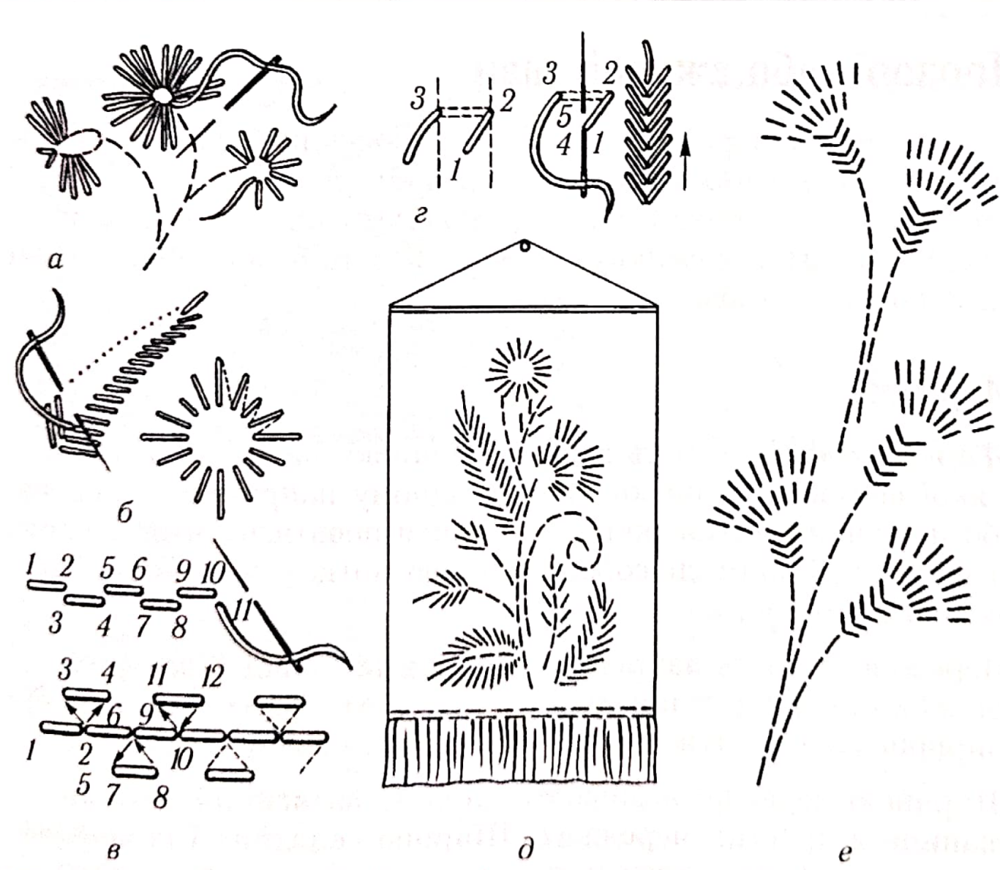
Рис. 74.Гладь штрихова: а–г – різновиди гладі; д, е–зразки узорів
При вишиванні швидкою гладдю застосовують майже всі раніше відомі шви: вперед голку, строчку, петельний, стебловий, козлик, зиґзаґ (пилочка), тамбурні, штрихову гладь та створені на їхній основі нові, інколи подібні до них. Цікаві у роботі строчки в два й три ряди, кривульки, шви наскрізні, ланцюжком, вузловий, фестончастий, тамбур і пів петля, декоративне штопання тощо (рис. 74, в, г).
Легкими декоративними швами вишивають панно, килимки, диванні подушки, сумки, оздоблюють одяг (рис. 74, д, е).
Контрольні питання:
- Якими способами виконують вільну гладь?
- Порівняйте характерні особливості вільної двобічної та полтавської гладі.
- Охарактеризуйте технологію виконання рушникових швів.
- Назвіть технологічні вимоги до виконання прорізної гладі.